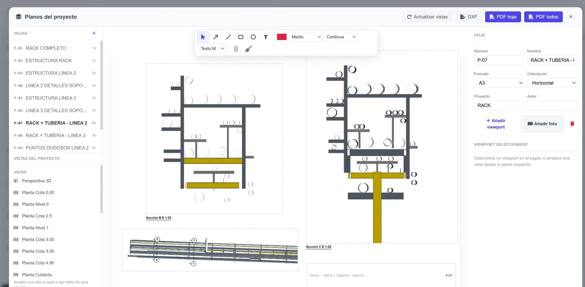
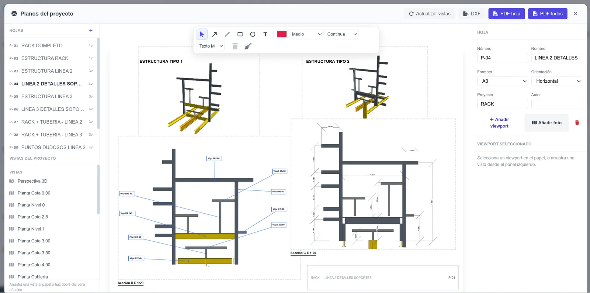

Vistas que salen del modelo
Las plantas se crean con cada nivel. Las secciones y los alzados se definen con una línea y una profundidad, y todo lo que se dibuja en ellos es el propio modelo: si cambias un hueco, cambian la planta, el alzado y la medición.
Un juego de planos en una orden
Para el proyecto demo, HEFESTO generó de una vez un juego A3 con las dos plantas, los cuatro alzados y dos secciones centrales. Las cotas son asociativas: van ancladas a muros, huecos, ejes y niveles, y se recalculan al editar.


Exportación
Cada hoja se exporta a PDF o a DXF para seguir en AutoCAD. El modelo sale además en IFC4, JSON HEFESTO, Excel y BC3, de modo que el mismo proyecto alimenta el plano, el presupuesto, el cálculo y la IA.
Tu primera hoja
Crea una hoja A3 horizontal con la planta baja a 1:100 y el alzado sur a 1:200. Mueve una ventana en el modelo y comprueba que las cotas de la hoja se actualizan solas.